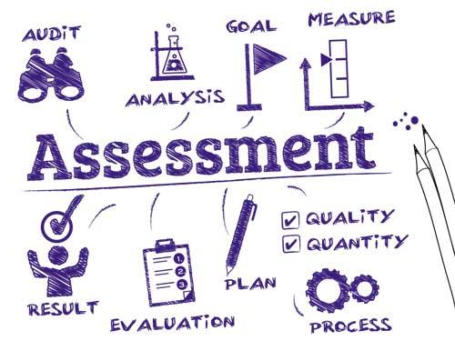
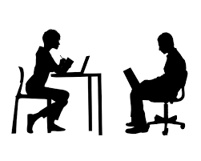
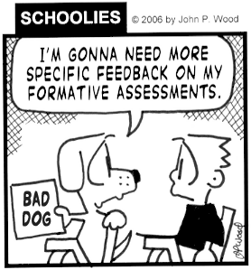
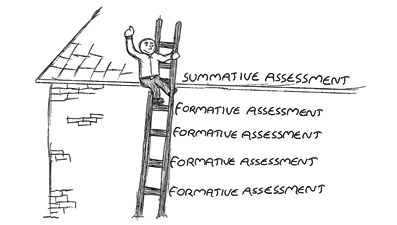

Module 4: Responding to Assessment
4.1 Assessment
- Assessment vs. Evaluation
- Types of Assessment
- Diagnostic Assessment
- Formative Assessment
- Summative Assessment

The word “assessment” can mean a lot of different things to different people. There are also many different approaches and reasons for assessing students.
Assessment vs. Evaluation
Assessment is the gathering of information about what students know and can do in order to make decisions that will improve teaching and learning. Assessment and evaluation are necessary and important elements of the instructional cycle.
Evaluation is a judgement regarding the quality, value or worth of a response, product or performance, based on established criteria and curriculum standards. Evaluation gives students a clear indication of how well they are performing based on the learner outcomes of the curriculum. The payoff of effective evaluation is that students learn how they can improve their performance. Assessment and evaluation always go together.
With information from assessment and evaluation, teachers can make decisions about what to focus on in the curriculum and when to focus on it. Assessment identifies who needs extra support, who needs a greater challenge, who needs extra practice and who is ready to move on. The primary goal of assessment is to provide ongoing feedback to teachers, students and parents, in order to enhance teaching and learning.
Types of Assessment
Assessments can take many forms and can be designed for many reasons. There’s a lot of jargon used to name concepts related to assessments and some of it can be hard to keep track of. Here’s a quick breakdown:
- Diagnostic: Given at the beginning of the school year, or the beginning of a new unit of study, a diagnostic test attempts to quantify what students already know about a topic.
- Formative: Given throughout the learning process, formative assessments seek to determine how students are progressing through a certain learning goal.
- Summative: Given at the end of the year or unit, summative assessments assess a student’s mastery of a topic after instruction.
- Norm-referenced tests: These tests measure students against a national “norm” or average in order to rank students against each other. The SAT test in the US is an example of a norm-referenced test.
- Criterion-referenced tests: These tests measure student performance against a standard or specific goal. Unit tests and diploma exams as usually criterion-referenced.
You will now take a look at diagnostics, formative and summative assessments in more detail.
Diagnostic Assessment

Diagnostic assessments assess strengths, weakness, and prior knowledge. Some students may already be experts in a given topic, while others may be missing foundational skills that are key to mastery. Many teachers use the same diagnostic assessment as a formative or summative assessment later into the unit to compare a student’s score at the beginning, middle, and end of instruction. Additionally, this kind of assessment helps teachers provide instruction to skills that need more work.
Other Diagnostic Assessment Methods
| Observation | Watching how students solve a problem can lead to further information about misunderstanding. |
|---|---|
| Discussion | Hearing how students reply to their peers can help a teacher better understand a student’s level of understanding. |
| Confidence Indication | On a traditional pen and paper test, students are asked to indicate how confident they are in their answers. Letting students self-report can tell teachers a lot about a student’s prior knowledge of the material. |
| Interviews | This involves designing questions that get to the heart of the curriculum material. Teachers interview students to gauge each child’s understanding of the topic. Teachers learn where each student’s prior knowledge is. This may help them pair students to work together later in the unit. |
Formative Assessment

Formative assessment monitors student performance and progress during learning. This type of learning is often low-stakes and ungraded. It’s used as a way for the teacher to see if the student is making progress toward the end goal of mastering the skill. Teachers use formative assessment techniques to monitor student learning so that they can provide feedback or help along the way. Both diagnostic and summative assessments can be used as formative assessment.
Other Formative Assessment Methods
| Exit slips | Ask students to solve one problem or answer one question on a small piece of paper. Students hand on the slips as “exit tickets” to pass to their next class, go to lunch, or transition to another activity. The slips give teachers a way to quickly check progress toward skills mastery. |
|---|---|
| Graphic organizers | When students complete mind maps or graphic organizers that show relationships between concepts, they’re engaging in higher level thinking. These organizers will allow teachers to monitor student thinking about topics and lessons in progress. |
| Self- assessments | One way to check for student understanding is to simply ask students to rate their learning. They can use a numerical scale, a thumbs up or down, or even smiley faces to show how confident they feel about their understanding of a topic. |
| Think-pair-share | This is an oldie but goodie. Ask a question, give students time to think about it, pair students with a partner, have students share their ideas. By listening into the conversations, teachers can gauge student understanding and assess any misconceptions. Students learn from each other when discussing their ideas on a topic. |
Summative Assessment

Summative assessments are designed to measure student achievement at the end of instruction. These types of assessments evaluate student learning at the end of a project, unit, course, or school year. Summative assessment scores are usually recorded and factored into student academic records in the form of letter grades and scores from tests like PAT or DIPLOMA EXAM.
| Portfolios | Portfolios allow students to collect evidence of their learning throughout the unit, quarter, semester, or year, rather than being judged on a number from a test taken one time. Education World put together this great article on the use of portfolios as assessment tools, and our own Kristen Hicks hunted down tools that can be used to create digital portfolios back in February of 2015. |
|---|---|
| Projects | Projects allow students to synthesize many concepts into one product or process. They require students to address real-world issues and put their learning to use to solve or demonstrate multiple related skills. |
| Performance Tasks | Performance tasks are like mini-projects. They can be completed in a few hours, yet still require students to show mastery of a broad topic. Inside mathematics put together a fantastic, free set of math performance assessment tasks. |
You Have Been Assessed!
Choose a core course you are currently taking or one that you recently completed. You are going to refer to this same course throughout the module. You will be evaluating assessments that you have done, determining their effectiveness in indicating what you know about the subject, and consider other ways of demonstrating your knowledge of a subject.